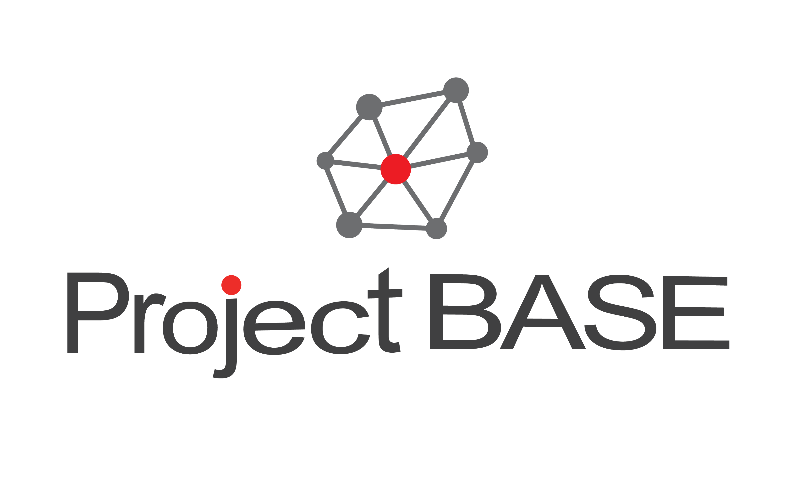

フリーのコンサルタントに求められる
キャリアアップを支援します
フリーランスでは、スキルも磨きたいし、案件も見つけたい。
あなたの目指すキャリアに合った案件、ご紹介します。

Project BASEとは、一つの会社に依存せず、プロジェクト単位でジョブホッピングする新しい働き方を模索するプロフェッショナル人材と、プロジェクトに必要な人材を探している企業様をつなげるプラットフォームサービスです。
2008年の創業から現在まで、数百件に及ぶマッチングを成立させてきました。
その経験から、個々のキャリアビジョンに合った、キャリアアップにつながるプロジェクトをご紹介することが可能です。
何かのセクション・・・
何かのセクション・・・